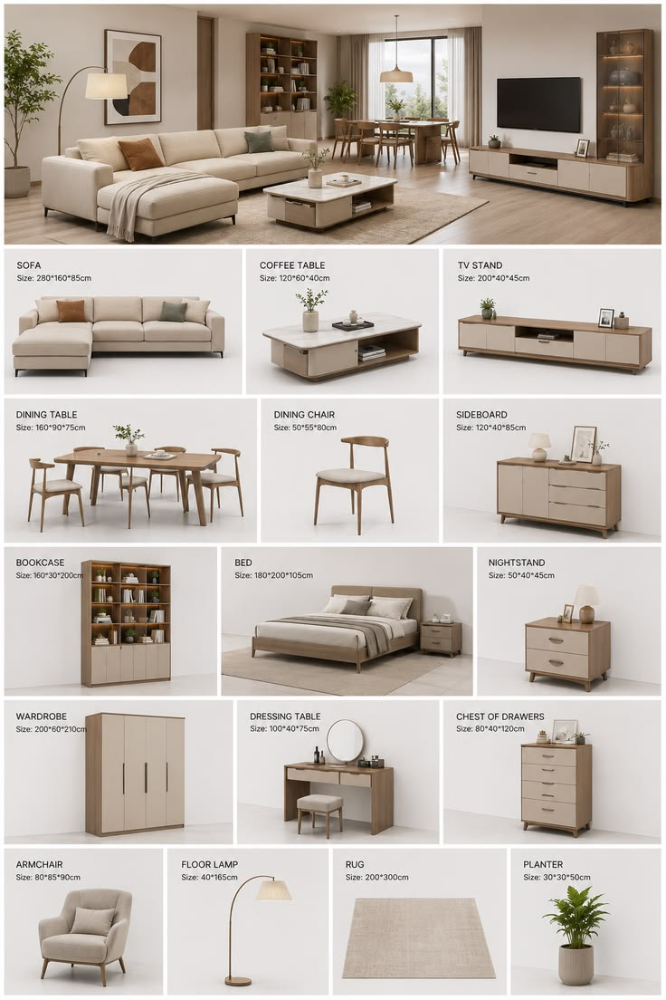
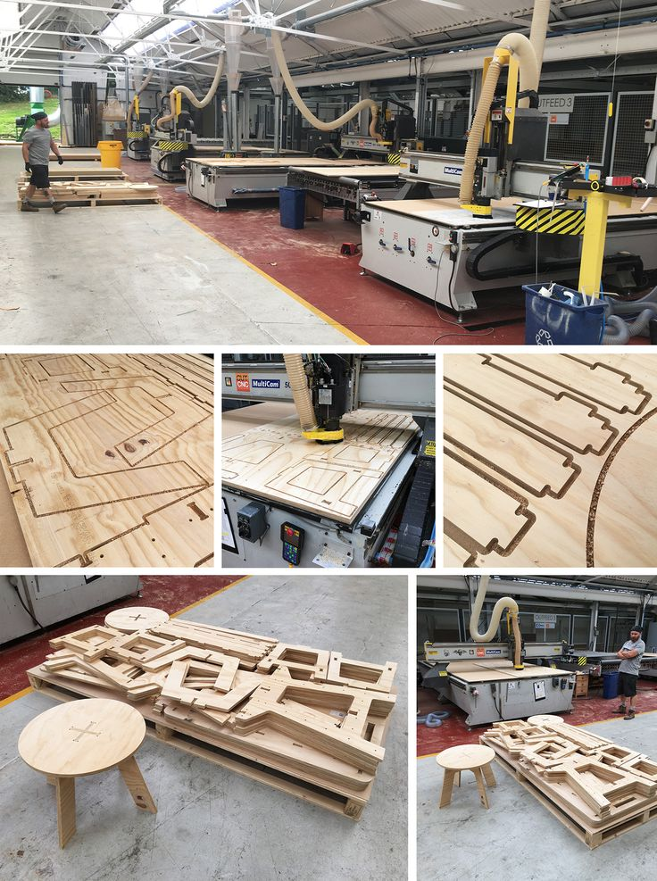
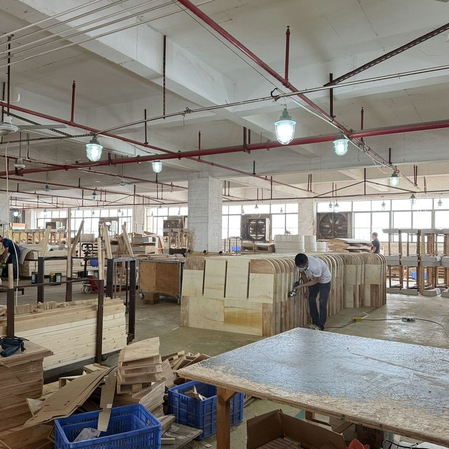
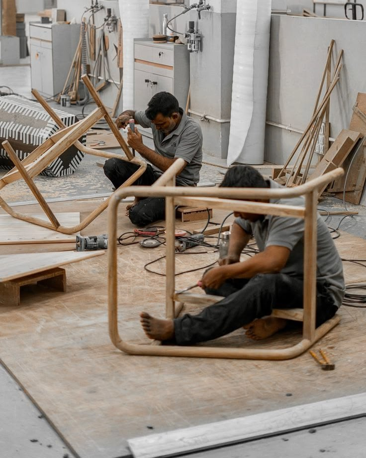
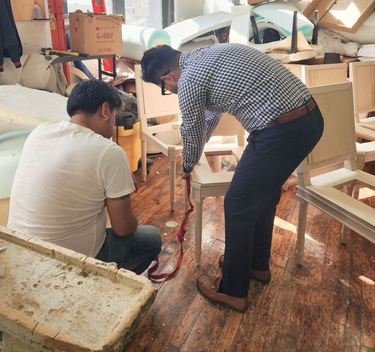
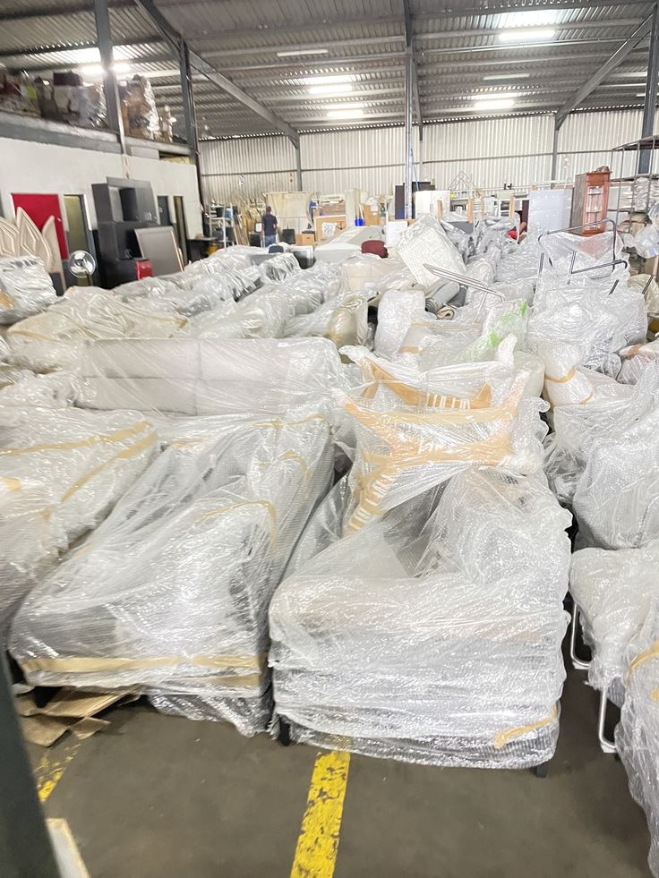

01 / MATERIALS
Material Selection
We source suitable raw materials and components based on the furniture design, quality requirements and project specifications.
From careful material selection to finishing and final supply, our manufacturing approach brings together thoughtful planning, skilled workmanship and attention to each project's requirements.
Furniture manufacturing is a process of bringing together suitable materials, considered design and careful workmanship. Each project is handled according to its specifications, dimensions and order requirements.
At Suraj Furniture Exports, our production approach combines in-house manufacturing activities with specialised external suppliers where particular components or processes are required.
From preparation and assembly to finishing, inspection and packing, each stage is planned around the intended product and the customer's requirements.
An organised sequence of activities takes each order from material preparation to finished furniture ready for supply.

We source suitable raw materials and components based on the furniture design, quality requirements and project specifications.

Materials are measured, cut and prepared to the required dimensions and shapes for each furniture component.

Individual components are assembled with attention to structure, fit, stability and the intended design.

Furniture receives the required surface preparation and finishing according to the agreed specifications.

Products are checked for dimensions, appearance, finish and overall workmanship before dispatch.

Finished furniture is prepared for packing and delivery according to the order and destination requirements.

We work with a combination of in-house manufacturing activities and specialised external suppliers where a project requires particular components or processes.
Production planning is guided by order specifications, quantities, material availability and agreed delivery schedules.
This approach allows each project to be considered according to its individual requirements, rather than following a single fixed production format.
Our quality approach focuses on the details that matter throughout the manufacturing and supply process.
Material selection based on project requirements
Attention to dimensions and design specifications
Careful assembly and finishing
Inspection before packing and dispatch
Focus on reliable supply and customer requirements
We welcome enquiries for wholesale orders, commercial furniture requirements and customised projects. Share your requirements with our team to begin a conversation.
Discuss Your Requirements